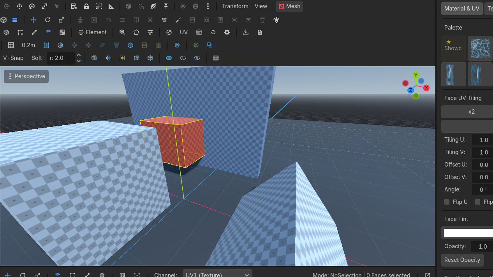
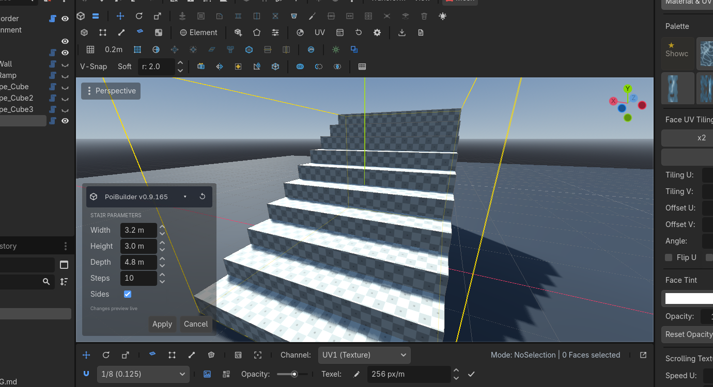
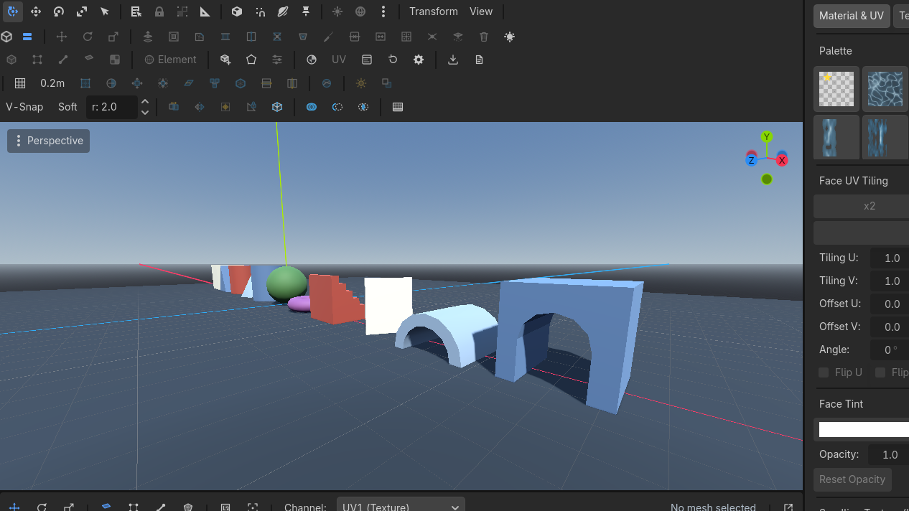
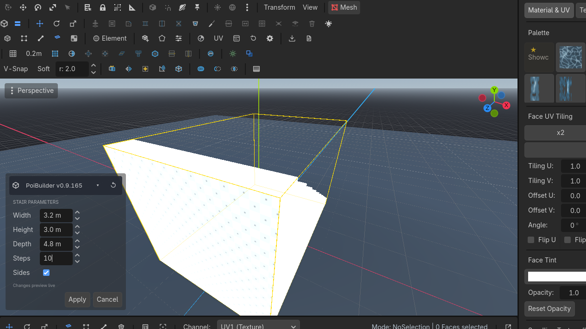

Shapes
Press on any surface, drag a base, set the height. Fifteen primitives share that language. Trim is the exception — it commits on release.
The drag
 New Shape
New Shape
 Row 2 · ShapesNew ShapeArms primitive creation: drag the base on any surface, set the height, click to confirm.Needs: Nothing (always enabled) → pick a type. Nothing is created yet.
Row 2 · ShapesNew ShapeArms primitive creation: drag the base on any surface, set the height, click to confirm.Needs: Nothing (always enabled) → pick a type. Nothing is created yet.- Press on a
PBMeshface or on the grid. Drag the base in that plane. - The first motion locks the drag axis on axis-aligned surfaces.
- Release. Move to set height along the face normal (negative grows below).
- Click to confirm. Esc before that click creates nothing.
Modifiers during the drag:
- Ctrl locks the drag direction and facing arrow.
- Alt shows the height plane.
- G toggles draw-on-grid (start on the plugin grid even over a mesh).

Params modal
Shapes with parameters the drag cannot express (step count, arch, sides…) open a live-preview modal after the click. Apply keeps them, Cancel restores the placement values. Either way the node is selected.
 Edit Params
Edit Params

 Row 2 · Shapes
Row 2 · Shapes Edit ParamsRe-opens the creation parameters of the selected shape (until it is hand-edited).Needs: A pristine factory shape reopens that modal. It is enabled only while the mesh still has a
Edit ParamsRe-opens the creation parameters of the selected shape (until it is hand-edited).Needs: A pristine factory shape reopens that modal. It is enabled only while the mesh still has a shape_id and has not been topology-edited. Extrude, knife, delete — anything that rewrites faces — marks it edited, and the factory parameters no longer describe the mesh.

The fifteen
| Shape | Use it for | Parameters (defaults) |
|---|---|---|
| Cube | Blocking, floors, walls | width / height / depth |
| Stair | Straight runs between floors | size + steps (6), sides |
| Curved stair | Spiral / quarter-turn | width 1.5 m, height 2 m, inner radius 0.5 m, curvature 180°, steps 8, sides |
| Prism | Roofs, ramps | size |
| Cylinder | Columns | radius 0.5 m, height 1 m, sides 8 |
| Plane | Floors, water sheets | width / depth 1 m |
| Door | Openings, arched gateways | 3 × 2.5 × 1 m, opening 2 m, frame 0.5 m, arched, 6 arch segments |
| Pipe | Hollow columns, ducts | radius 0.5 m, height 1 m, thickness 0.125 m, sides 8 |
| Cone | Caps, roofs | radius 0.5 m, height 1 m, sides 8 |
| Sprite | Billboards, trees, signs | width / height 1 m, lit, cast shadow, auto-orient |
| Arch | Openings, bridges | radius 1 m, depth 0.5 m, thickness 0.3 m, sides 8, sweep 180° |
| Sphere | Props, lights' stand-ins | radius 0.5 m, subdivisions 2 |
| Torus | Column bases, rails | outer 0.5 m, tube 0.15 m |
| N-gon | Custom prism from the N-Gon tool | radius 1 m, height 2 m, sides 6 |
| Trim | Skirting, cornice, dado — own page | profile, length, height 0.15 m, depth 0.05 m, arc segments, upside down, flip side |
N-Gon is also a drawing tool: click points, Enter to set height.

Use cases
A staircase between two floors
- New Shape → Stair. Drag from the lower slab toward the upper, along the run.
- Height = floor-to-floor. Apply.
- Raise Steps until the treads meet the landing. Edit Params if you already confirmed.
- Sides on = closed stringers. Off = open treads.

An arched doorway
Directional shapes like Door and Stair display a solid orange arrow on the base plane while you drag. For a doorway:
- What the arrow indicates: The arrow points in the doorway's facing direction — through the opening, perpendicular to the door frame (the path a character walks through). The doorway opening spans the width (perpendicular to the arrow), while the wall thickness is the depth (parallel to the arrow).
- How the arrow is determined: Because doors are wider than they are thick, the arrow naturally chooses the shorter dimension of your dragged base rectangle (unlike stairs, which follow the longer dimension along the run). The arrow points away from the drag start along your mouse direction, snapped to the nearest cardinal world axis on cardinal surfaces to keep the doorway square with the world.
- Locking direction with Ctrl: While dragging the base footprint, holding Ctrl locks the current facing direction and arrow vector. Once locked, moving the mouse resizes the base rectangle without the arrow recomputing or flipping 90° if the aspect ratio shifts.
Example gesture — making a door face a specific way:
If you want a doorway facing North (along -Z) in an East-West wall:
- Pick New ShapeRow 2 · ShapesNew ShapeArms primitive creation: drag the base on any surface, set the height, click to confirm.Needs: Nothing (always enabled) → Door, then click on the floor where you want the doorway.
- Drag a short distance in the direction you want it to face (pull slightly North). The orange arrow immediately appears, pointing North along the short axis.
- Press and hold Ctrl to lock that facing direction.
- While still holding Ctrl, drag laterally (East or West) to pull out the full doorway width (e.g. 2.5 m). Because Ctrl is held, the arrow stays locked pointing North instead of flipping sideways.
- Release the mouse button to commit the base footprint.
- Move the mouse upward to set the doorway height, then click to confirm.
- The params modal opens: tick Arched, raise Arch Segments (6–8) for a rounder head, and adjust leg_width (the jamb width). Click Apply.
A torus column base
Drag Torus on the floor at the column's foot. Outer radius ≈ column radius + tube. Edit Params to fatten the tube without moving the node.
A sprite billboard
Sprite is a one-face card. Auto Orient To Camera turns it into a billboard at export. Place trees and signs with the sprite placer (B) instead if you want the carousel.
Height is along the pressed face's normal. On a wall that is "out of the wall", not world +Y. If the preview disappears into the floor, you dragged height negative — flip the mouse.